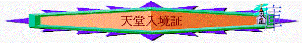

目的：認識救恩，清楚確據
時間：35--40mins
對象：少年人
A.介紹＋祈禱
B.查經
引言－－今日我們會查考關乎「天堂」「地獄」事情，在您未信主前，您在小說，電視，個人觀
念上「天堂」是怎樣的地方（輪流講一個特色）？
「地獄」又如何（．．．．．．）？
讓我們藉以下經文查考天堂地獄的真相，究竟甚麼人會入呢？如何保証自己上天堂
呢？．．．．
一．地獄的可怕（啟２１：７－８）
１．v.8題到火湖，火湖是甚麼地方，有甚麼特別之處，如再參考（賽６６：２４），火湖
有甚麼可怕？
２．有否被火燒過or遇過很多蟲的經歷？試分享（當時的感受如何？）
３．你認為甚麼人會落火湖？
４．v.８題到「膽怯」（不認主）「不信的」「行邪術的」「拜偶像的」似乎是對神？可否
簡單總結以上對神有甚麼不妥的地方？您以前有否犯過？那方面最深刻？試分享
５．v.８題到「殺人的」「淫亂的」「說謊話的」似乎對人，你覺得今天社會最易犯是那種？
有沒有見過？您自己有否犯過呢？
６．以上的人結局如何？（從v.７－８看）
二．天堂的福榮（啟２１：１－５）
１．
原來火湖是那麼可怕的？我們再看看啟２１：１－５，天堂又如何？聖經怎描述？
２．
有甚麼情景，只會在天堂出現，地上沒可能發生呢？
３．
您最渴望是那種情景？
４．
但一般人（普通社會）認為甚麼人有資格上天堂？按這資格，您能夠入嗎？
三．天堂入境証（約３：１６，３６）
１．
約３：１６，３６，甚麼人能上天堂，不至亡呢？
２．
若一個人生長在窮地方，他沒返過教會，沒有聖經，並一生殺人放火，臨死前信了主，但沒為主作了甚麼，他就死了，可否得救，上天堂呢？為甚麼？
３．
得了永生後，會否因為我們表現不好而收回呢？何以見得？可參考（來７：２５，提後２：１３）
４．
你是否１００％肯定自己信耶穌？幾時決志？那麼你若今天離開世界，您能否肯定自己上天堂？憑甚麼肯定／不肯定？
５．
若有人信了，他不肯定自己是否上天堂，怎樣幫他肯定？說甚麼？
總結：在今日查經中，我們認識到甚麼真理？試每人分享一項
C.結束祈禱